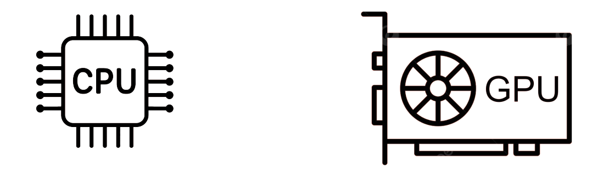
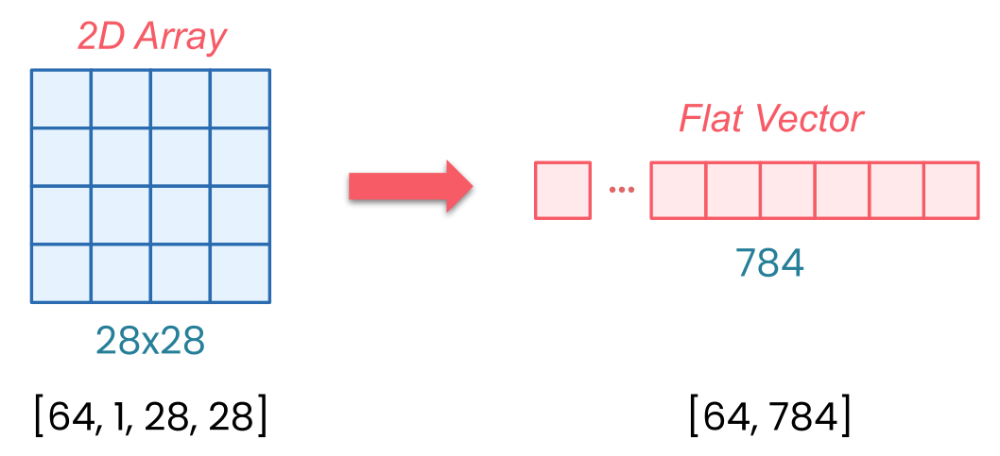

Device Management

Every tensor and model lives on a device
CPU (default)
GPU (accelerator)
Key rule: Model and data must be on the same device!
Welcome back. As you start working more with tensors and models in PyTorch, there’s something important that you need to understand early on: every tensor and every model lives on a device. Now that could be your CPU, or a GPU, or other accelerator if one is available.
And here’s the key: PyTorch will not move things around for you automatically. And if your tensors and models aren’t all on the same device, your code may not run. It could crash with an error.
In this session, you’ll learn how to control where your data and computations live, and how to avoid one of the most common errors people run into when they get started with PyTorch.
GPU Memory Limits
GPU memory is limited
Error if batch size too large:
RuntimeError: CUDA out of memorySolution: Lower batch size (32-64 is good starting point)
Even when everything’s on the right device, there’s one more thing to watch out for: the GPU memory. Because it is limited. If your model and batch size take up more memory than the GPU has available, you’ll see an error like this.
And that’s why batch size matters. Small batches make training slow. Large batches too large, and you might exceed your GPU’s memory and cause a crash. For many systems, a batch size between 32 and 64 is a good starting point, but it does depend on your hardware and on your model architecture.
If you see a memory error, first try lowering your batch size. It is the most common fix. Get device management right early, and you’ll avoid one of the most frustrating classes of errors in PyTorch. And when something does go wrong, you’ll know exactly what to check.
Setting Up the Data Pipeline
import torchvisionfrom torchvision import transforms= transforms.Compose([0.1307 ,), (0.3081 ,))# Grayscale Images have 1 Channel. # That's why we used 1 element tuples for Normalize ToTensor: converts to tensors, scales 0-255 → 0-1
Normalize: centers around 0 using dataset mean/std
So let’s jump into the code and build a model. We’ll start with the data pipeline. First, you need to import TorchVision, and this is PyTorch’s computer vision library. It comes built in with popular datasets like MNIST, as well as tools for image processing.
Remember transforms? Well here you’re applying them to MNIST. ToTensor converts the images to tensors and then scales the pixels from 0 to 255 down to a range of 0 to 1. Normalize then shifts and scales those values so they’re centered around 0.
Now what are these numbers 0.1307 and 0.3081? Well, they are the mean and standard deviation of the entire training set. By normalizing every image with the same values, you make the data more consistent, and that helps the model learn faster. We’ll see more on that in the next module.
Loading the Dataset
= torchvision.datasets.MNIST(= './data' ,= True ,= True ,= transform= torchvision.datasets.MNIST(= './data' ,= False ,= transformTorchVision handles downloading and organizing
Now let’s load in the datasets. For the training dataset, root='./data' says simply where to store the files on your computer. train=True tells it that you want the 60,000 training images. download=True means that if MNIST isn’t already there, go ahead and download it. And transform applies those pre-processing steps that you just defined to every image automatically.
The test dataset is almost identical. Just use train=False to get the 10,000 test images instead of the training ones. Got to use the same transforms, the same storage location, and all of that. TorchVision will handle all of the downloading and organizing for you.
Creating DataLoaders
= DataLoader(= 64 , = True = DataLoader(= 1000 ,= False Training: shuffle=True (mix up order each epoch)
Testing: shuffle=False (order doesn’t matter)
Now onto data loaders. For training, you’re setting the batch size to be 64. That means it’s 64 images in each batch. With shuffle=True, for every epoch the model will see the images in a different random order. The test loader uses batch_size=1000. These are much larger batches because we don’t need to calculate gradients - we’re only testing.
But notice something interesting: the training data is shuffled, but the test data isn’t. Take a moment to think about why that might be. Well, datasets often come organized by class. If you don’t shuffle, your model might see 6,000 zeros in a row before seeing any ones. It could learn unintended patterns like “early batches are zeros, late batches are nines,” instead of actually learning what makes a zero look like a zero.
Shuffling will mix everything up so that each batch has variety in it. The model learns the actual features of each digit and not just their position in the dataset. But for testing, well, the model’s done learning. You’re just checking if it can recognize digits correctly. Order doesn’t matter then.
Why Flatten?
MNIST images: shape [1, 28, 28] (channels, height, width)
With batch: shape [64, 1, 28, 28]
Linear layers expect: flat vectors [batch, features]
Flatten: [64, 1, 28, 28] → [64, 784]

MNIST images arrive as tensors with a specific shape. When PyTorch loads a single MNIST image, it gives you a [1, 28, 28]-dimensional tensor. And that’s the channels, the height, and the width. The one channel means that it’s grayscale - just a single brightness value from 0 to 255 for each pixel. 28 by 28 pixels are the size, and those are the other two dimensions.
But when you’re training on batches, PyTorch will actually add another dimension. So with batch_size=64, your data arrives as [64, 1, 28, 28]. So that’s 64 images, each one channel, and each is 28 by 28 pixels.
Here’s the issue: Linear layers expect flat vectors, and that’s one long row of numbers per image, not two-dimensional grids. And that’s what flatten does. It takes each of your 28 by 28 images and reshapes them into 784 values in a row. Why 784? Because 28 × 28 = 784.
So now your batch, instead of being dimension [64, 1, 28, 28], just simply becomes [64, 784]. Without flatten, you get a shape mismatch error when your image data hits the linear layer.
Model Architecture Breakdown
Linear(784, 128):
784 pixel values → 128 hidden features
ReLU:
Activation function (non-linearity)
Linear(128, 10):
128 features → 10 outputs (one per digit class)
So now you can stack your layers. Linear(784, 128) takes those 784 pixel values and transforms them to 128 hidden features. ReLU is our activation function that keeps our positive values and zeros out the negatives. Then Linear(128, 10) takes the 128 features and turns them into 10 outputs. 10 outputs being one for each digit class. We’ve 10 digits from 0 through 9.
Now you’re going to define the flow of the data in that forward method. Take the input, flatten it, pass it through your layers, return the output.
So now you have everything ready: a data pipeline that loads and pre-processes MNIST images, and a neural network that can process those images. But right now this model doesn’t know a zero from a nine. In the next session, you’re going to see how to bring this model to life with training.